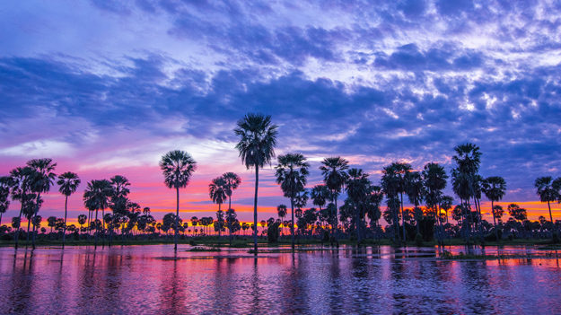

Bañado La Estrella
Las Lomitas - Formosa
Descripción
Es uno de los humedales más grandes de Sudamérica y un paraíso natural del que se habla cada vez más. Está en el noroeste de Formosa y fue elegido como una de las Maravillas Naturales de la Argentina. Abarca unas 400 mil hectáreas de lagunas, bañados, palmares y “champales” (bosques inundados cubiertos por enredaderas), y sus propuestas agrestes son variadas: ecoturismo, safaris fotográficos y observación de aves y fauna.